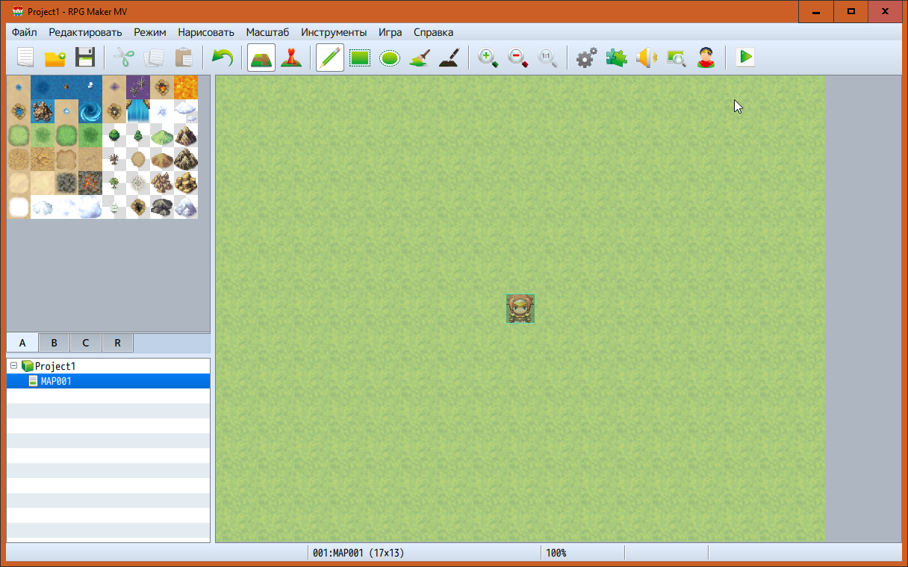

Поддерживаемые форматы
RPG Maker MV для Mac
RPG Maker MV для Mac - то, чего пользователи Mac ждали давно! Создавайте ваши игры на Mac так же просто, как это было бы на Windows!

Поддержка мультиплатформенности
Теперь игры делаются в формате HTML5, что позволяет запускать игры не только на Windows, Mac OS X, Android, и iOS, но так же и запускать их в онлайне, через браузер.
Для подробной информации изучите раздел [Экспортируемые форматы].